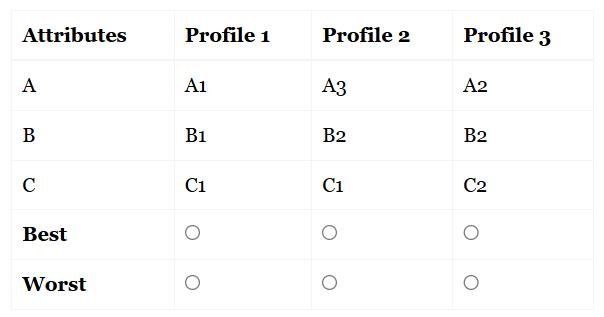

The multi-profile case involves presenting respondents with several profiles at a time and asking them to identify the ‘best’ and ‘worst’ options from each choice set. Each profile represents a combination of different attribute levels.
Unlike the object or profile cases, where choices are made within individual profiles or among single attributes, the multi-profile case requires respondents to make choices between entire profiles. As the name implies, respondents evaluate three or more profiles at a time in each choice set.
Suppose we have three attributes (A, B, C), each with three levels:
We can generate 9 balanced profiles, which are then arranged into 12 choice sets, each containing 3 profiles. For example:
Example diagram of a multi-profile choice set:

Respondents are presented with one choice set at a time and asked to select the most and least preferred profile from the set. This approach allows researchers to understand how respondents make trade-offs between different attribute combinations, providing deeper insights into preference structures.